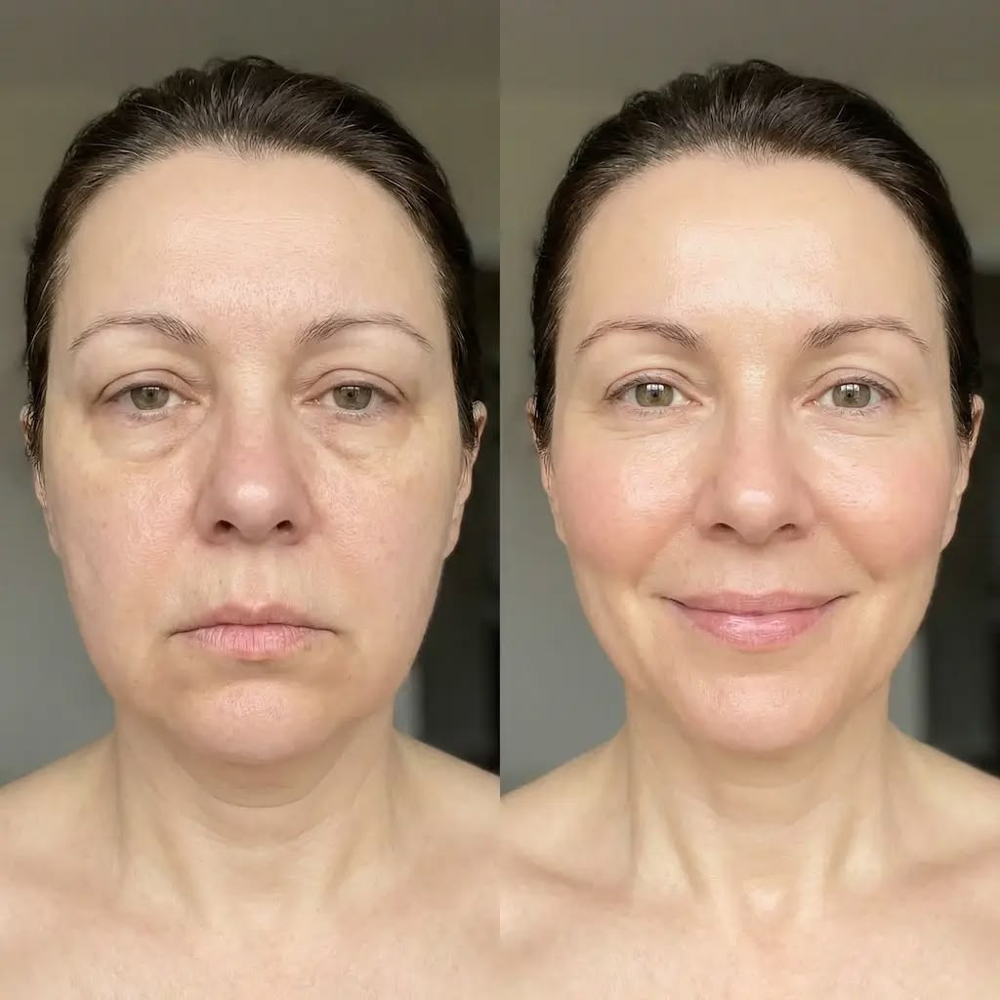
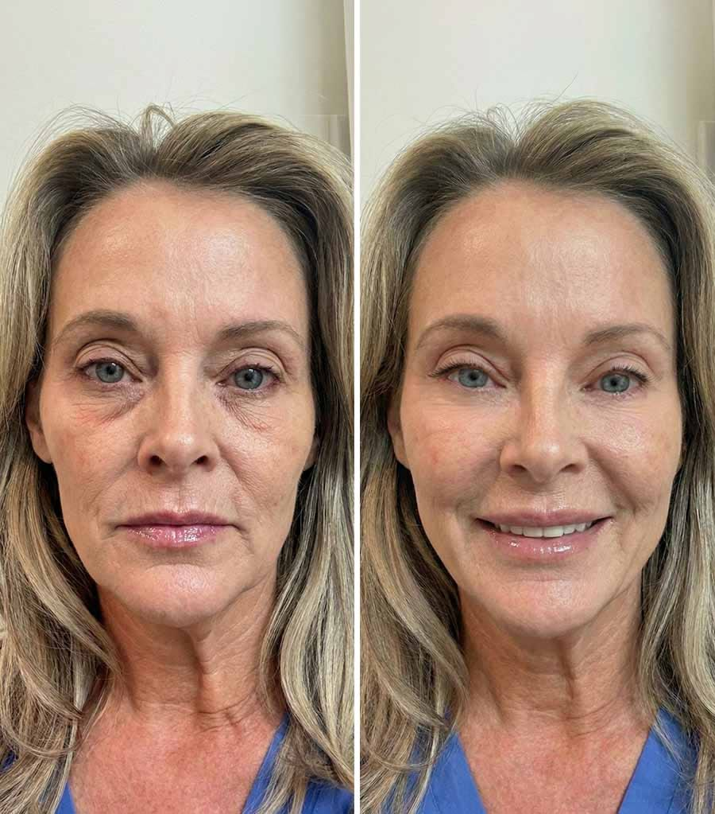
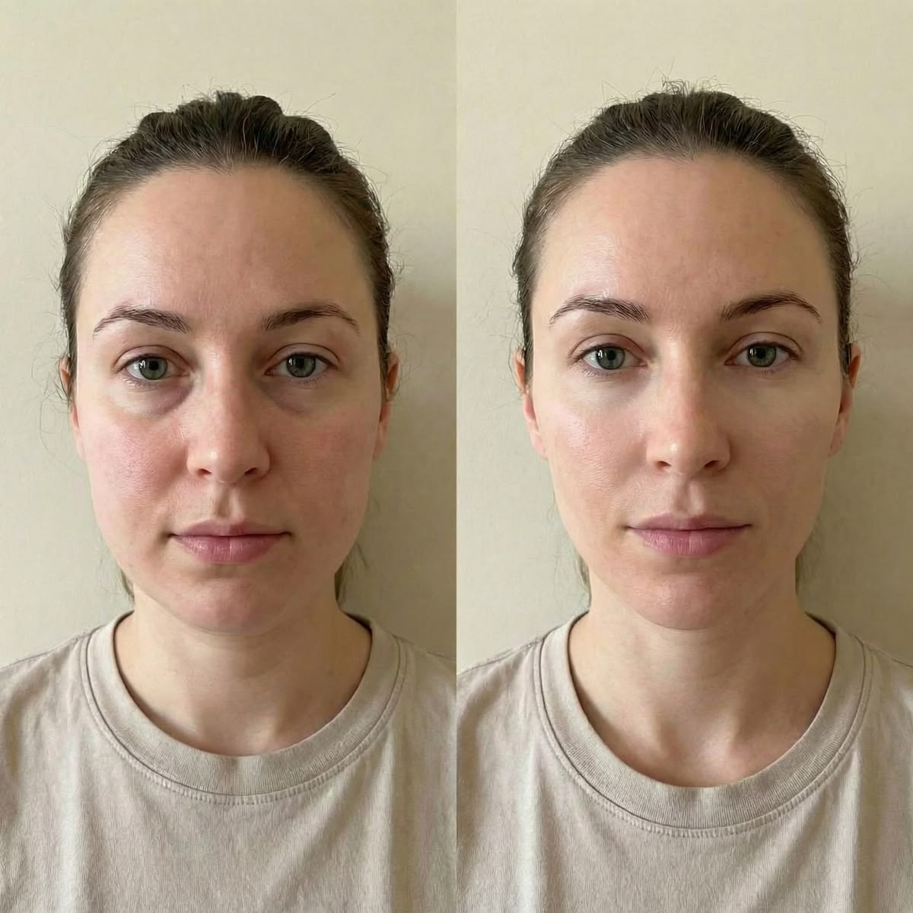
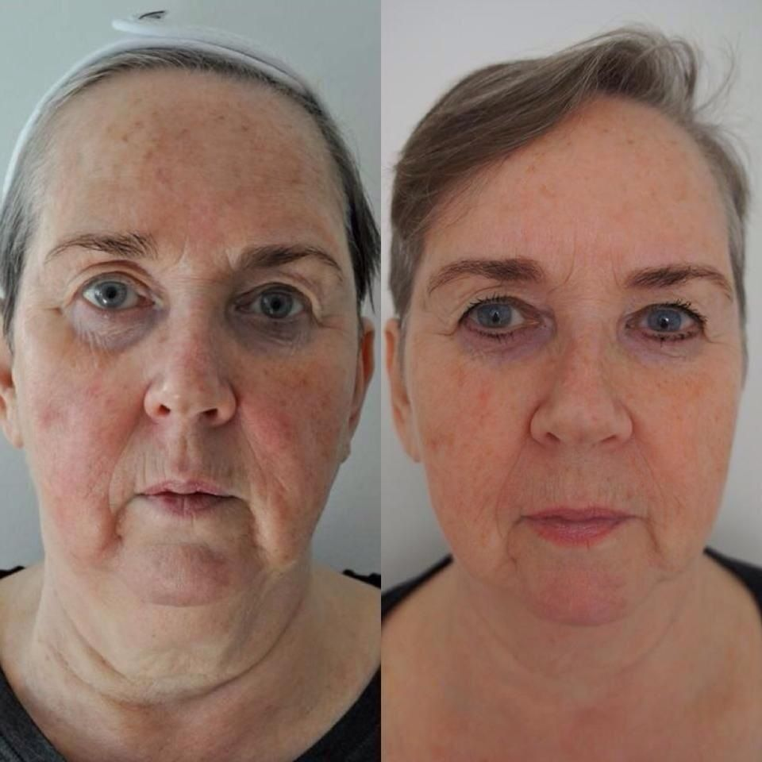
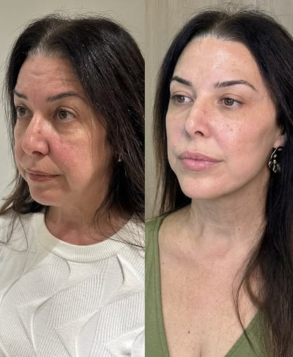

MÉTODO FACIAL ESSENCIAL
O método principal para começar sua rotina.
€7,90
- Rotina facial guiada de 3 minutos
- Cartilha passo a passo principal
- Acesso imediato e vitalício
🔒 Compra segura · Garantia de 7 dias
Siga o passo a passo completo e descubra como uma rotina de apenas 3 minutos por dia pode ajudar a deixar o rosto com uma aparência mais firme, definida e rejuvenescida, sem procedimentos complicados ou equipamentos especiais.
Talvez o que mais incomode não seja apenas o que você vê no espelho.
Você evita determinadas fotos ou não gosta de se ver nelas como antes.
O contorno parece menos definido e algumas zonas do rosto começam a chamar mais atenção.
Pequenas mudanças na aparência podem afetar a forma como você se sente ao olhar para si.
A sequência exata de movimentos faciais para eliminar o rosto derretido e as marcas de expressão, sem procedimentos estéticos e equipamentos caros — apenas 3 minutos.
Ative a pele e relaxe os músculos do rosto em poucos segundos, antes de começar.
Aprenda os movimentos exatos, na ordem certa e com a pressão certa em cada zona.
Repita a sequência de 3 minutos por dia e mantenha a rotina de forma simples.
Tudo o que você precisa para começar a sua rotina.
O método principal para começar sua rotina.
€7,90
🔒 Compra segura · Garantia de 7 dias
O método completo, com todas as cartilhas extras.
€14,90
🔒 Compra segura · Garantia de 7 dias
Aplique durante 7 dias. Se você não tiver resultado, devolvemos totalmente o seu dinheiro.

“Adorei! Recomendo mesmo ❤️”
Ana, 47 anos

“Super recomendo, principalmente para quem já tentou várias coisas.”
Teresa, 53 anos

“Meninas, façam! Eu estou mesmo contente por ter começado.”
Carla, 41 anos

“Estou surpreendida com o quanto é fácil encaixar na rotina.”
Helena, 58 anos

“Ameiii 😍 Recomendo muito!”
Isabel, 55 anos
Imagine olhar uma foto em família sem procurar primeiro aquilo que incomoda. Olhar no espelho e sentir que sua aparência combina mais com a mulher que você sente que é.